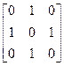

交卷时间：2021-06-27 13:14:16
(4分)
含n个顶点的有向图最多有（ ）条弧。
设输入序列为ABC，输出序列为CBA，则经过的栈操作为（ ）。
设有k个关键字互为同义词，若用线性探测法把这k个关键字存入散列表，至少要进行（ ）次探测。
m阶Ｂ树中的一个分支结点最多含（）个关键字。（ ）
一棵高为k的二叉树最少有（ ）个结点。
将两个各有n个元素的有序表归并成一个有序表，最少进行（ ）次比较。
(4分)栈和队列的共同特点是( )。
(4分)设有一个二维数组A[m][n]，假设A[0][0]存放位置在644(10)，A[2][2]存放位置在676(10)，每个元素占一个空间，问A[3][3](10)存放在什么位置？脚注(10)表示用10进制表示。( )
设一棵m叉树中度数为0的结点数为N0，度数为1的结点数为Nl，……，度数为m的结点数为Nm，则N0=（ ）
(4分)二叉树的第k层的结点数最多为( ).
判定一个栈顶指针为S且不带头结点的链栈为空栈的条件是（ ）。
下列程序段的时间复杂度为（ ）。
for(i=0;i<n;i++) x=x-2;
(4分)从二叉搜索树中查找一个元素时，其时间复杂度大致为（ ）
设对下图从顶点a出发进行深度优先遍历，则（ ）是可能得到的遍历序列。
(4分)设有序表中有1000个元素，则用二分查找查找元素X最多需要比较（ ）次。（ ）
设图Ｇ的邻接矩阵A=，则图Ｇ中共有（ ）个顶点。
(4分)由权值分别为3,8,6,2的叶子生成一棵哈夫曼树，它的带权路径长度为（ ）
设在一不带头结点的链队列中，front和rear分别为其队头和队尾指针，则判定该队中只有一个结点的条件是（ ）。
设哈希表地址范围为0~19，哈希函数H(key)=key%17，使用二次探测再散列法处理冲突。若表中已存放有关键字值为6、22、38、55的记录，则再放入关键字值为72的记录时，其存放地址应为（ ）。
设二维数组A5×8按行优先顺序存储，每个数据元素占2个字节，首地址即元素A[0][0]的起始地址为S，则元素A[3][6]的起始地址为（ ）。
(4分)线性表若采用顺序结构时，要求内存中可用存储单元的地址（ ）。
下述文件中适合于磁带存储的是（ ）。
(4分)对于线性表（7，34，55，25，64，46，20，10）进行散列存储时，若选用H（K）=K %9作为散列函数，则散列地址为1的元素有（ ）个，
适用于折半查找的表的存储方式及元素排列要求为（ ）。
(4分)若有18个元素的有序表存放在一维数组A[19]中，第一个元素放A[1]中，现进行二分查找，则查找A［3］的比较序列的下标依次为( )
关闭